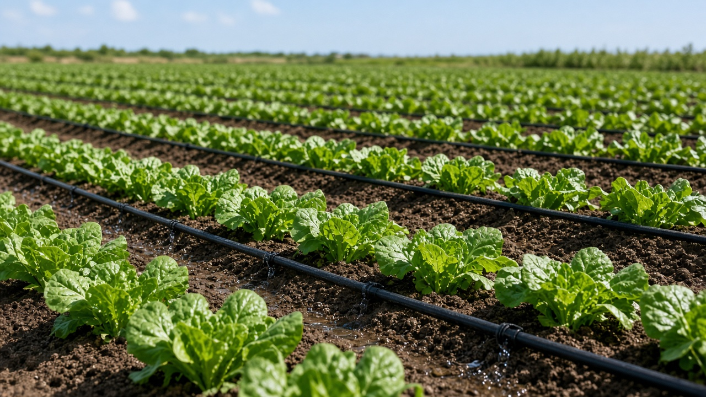
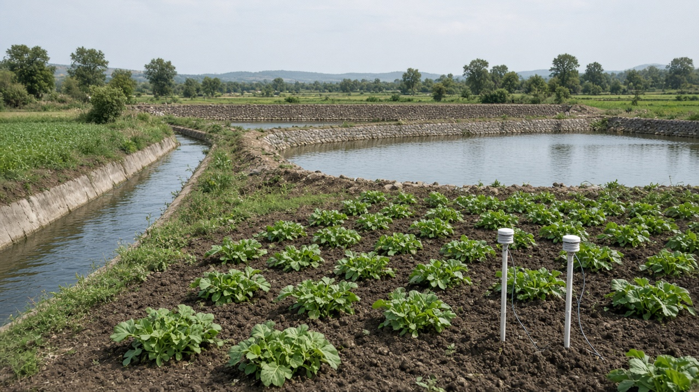
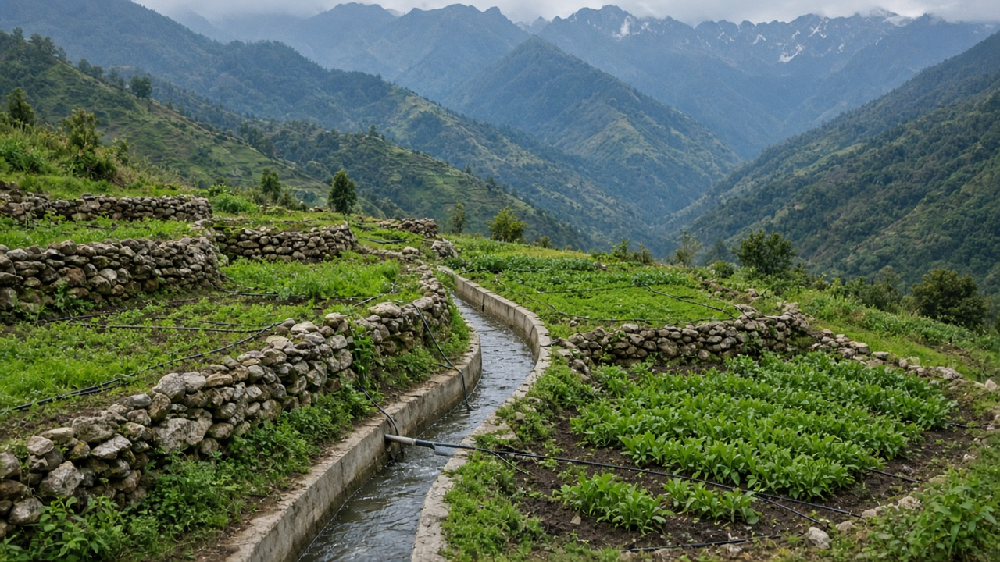

Sustainable Irrigation and Agricultural Water Use
Published on August 20, 2026

Agriculture accounts for roughly seventy percent of global freshwater withdrawals, making efficient water use essential for food security and ecosystem health. Sustainable irrigation delivers water to crops with minimal losses from evaporation, runoff, and deep percolation beyond root zones. Drip and micro-sprinkler systems apply water directly to plant bases, achieving high application efficiency compared to flood or furrow methods. Scheduling irrigation based on soil moisture sensors, crop growth stage, and weather forecasts prevents overwatering that wastes energy and leaches fertilizers into groundwater.
On-farm water harvesting through ponds, check dams, and contour trenches captures rainfall for use during dry periods, reducing dependence on overstressed rivers and aquifers. Laser land leveling and improved canal lining reduce seepage losses in command areas served by large irrigation projects. Crop selection matters: switching to less water-intensive varieties or drought-resilient cereals in water-scarce regions maintains yields while lowering total demand. Wastewater treated to safe standards can supplement irrigation in arid zones, though monitoring for contaminants protects soil quality and food safety. Farmers who measure water use carefully often discover significant savings without reducing crop output.
Integrated water resource management coordinates farmers, communities, and governments to allocate supplies fairly across competing uses including drinking water, industry, and environmental flows. Pricing reforms and volumetric metering encourage conservation while ensuring that smallholders receive affordable access through targeted subsidies. Wetland restoration and riparian zone protection upstream improve water quality and regulate flow regimes benefiting downstream agriculture. By treating water as a finite shared resource rather than an unlimited input, sustainable irrigation practices secure productive farming for present and future generations amid growing scarcity. Public education about water conservation in agriculture helps urban residents understand their role in supporting responsible food production.

कृषिले विश्वको करिब ७० प्रतिशत मिठो पानी खपत गर्छ, त्यसैले खाद्य सुरक्षा र पारिस्थितिकी स्वास्थ्यका लागि पानीको प्रभावकारी प्रयोग अत्यावश्यक छ। दिगो सिँचाइले वाष्पीकरण, बहिर्वाह र जरा क्षेत्रभन्दा बाहिरको गहिरो छिच्रोबाट न्यूनतम क्षति गरेर बालीलाई पानी पुर्याउँछ। टपक र सूक्ष्म छर्क प्रणालीले बिरुवाको आधारमा सिधै पानी लगाउँछ, बाढी वा नाली विधिभन्दा उच्च प्रयोग दक्षता प्राप्त गर्छ। माटो नमी सेन्सर, बाली वृद्धि चरण र मौसम पूर्वानुमानमा आधारित सिँचाइ तालिकाले अधिक सिँचाइ रोक्छ जसले ऊर्जा बर्बाद र मल भुँगर्भ पानीमा बगाउँछ।
पोखरी, रोक बाँध र समोच्च खाडल मार्फत खेतभित्र वर्षा सङ्कलन खडेरीमा प्रयोगका लागि पानी संचय गर्छ, थकित नदी र भुँगर्भ पानीमा निर्भरता घटाउँछ। लेजर जमिन समतलीकरण र नहर आवरणले ठूला सिँचाइ परियोजनाको क्षेत्रमा छिच्रो क्षति घटाउँछ। बाली छनोट महत्त्वपूर्ण छ: पानी कम क्षेत्रमा कम पानी चाहिने वा खडेरी-सहन अनाजमा परिवर्तन गर्दा कुल माग घटाउँदै उत्पादन कायम राखिन्छ। सुरक्षित मापदण्डमा शुद्धिकरण गरिएको फोहोर पानी शुष्क क्षेत्रमा सिँचाइ पूरक हुन सक्छ, दूषक निगरानीले माटो र खाद्य सुरक्षा संरक्षण गर्छ।
एकीकृत जल स्रोत व्यवस्थापनले किसान, समुदाय र सरकार समन्वय गरेर पिउने पानी, उद्योग र वातावरणीय प्रवाहसहित प्रतिस्पर्धात्मक प्रयोगमा निष्पक्ष वितरण गर्छ। मूल्य सुधार र मात्रात्मक मापनले संरक्षण प्रोत्साहित गर्छ, लक्षित अनुदानले साना किसानलाई सस्तो पहुँच सुनिश्चित गर्छ। माथिल्लो क्षेत्रमा जलमग्न क्षेत्र पुनर्स्थापना र नदी किनार संरक्षणले पानी गुणस्तर र प्रवाह व्यवस्थापन सुधार गर्छ। पानीलाई असीमित स्रोत होइन सीमित साझा स्रोत मानेर, दिगो सिँचाइले बढ्दो अपर्याप्ततामा हाल र भविष्यका पुस्ताका लागि उत्पादकीय खेती सुरक्षित गर्छ।

कृषि विश्व के लगभग ७० प्रतिशत मीठे पानी की खपत करती है, इसलिए खाद्य सुरक्षा और पारिस्थितिकी स्वास्थ्य के लिए पानी का प्रभावी उपयोग आवश्यक है। टिकाऊ सिंचाई वाष्पीकरण, बहिर्वाह और जड़ क्षेत्र से बाहर गहरी छिच्रो से न्यूनतम हानि करके फसलों तक पानी पहुँचाती है। टपक और सूक्ष्म छिड़काव प्रणाली पौधों के आधार पर सीधे पानी लगाती है, बाढ़ या नाली विधि की तुलना में उच्च प्रयोग दक्षता प्राप्त करती है। मिट्टी नमी सेंसर, फसल वृद्धि चरण और मौसम पूर्वानुमान पर आधारित सिंचाई अनुसूची अधिक सिंचाई रोकती है जो ऊर्जा बर्बाद और उर्वरक भूजल में बहाती है।
तालाब, रोक बाँध और समोच्च खाइ मार्फत खेत में वर्षा संग्रह सूखे में उपयोग के लिए पानी संचय करता है, थके नदी और भूजल पर निर्भरता घटाता है। लेजर भूमि समतलीकरण और नहर आवरण बड़े सिंचाई परियोजना क्षेत्र में छिच्रो हानि घटाते हैं। फसल चयन महत्वपूर्ण है: पानी कम क्षेत्र में कम पानी वाली या सूखा-सहन अनाज में बदलाव कुल मांग घटाते हुए उपज बनाए रखता है। सुरक्षित मानक पर शुद्धिकृत अपशिष्ट जल शुष्क क्षेत्र में सिंचाई पूरक हो सकता है, दूषकों की निगरानी मिट्टी और खाद्य सुरक्षा की रक्षा करती है।
एकीकृत जल संसाधन प्रबंधन किसान, समुदाय और सरकार समन्वय करके पीने के पानी, उद्योग और पर्यावरणीय प्रवाह सहित प्रतिस्पर्धात्मक उपयोग में निष्पक्ष आवंटन करता है। मूल्य सुधार और मात्रात्मक मापन संरक्षण प्रोत्साहित करते हैं, लक्षित अनुदान छोटे किसानों को सस्ती पहुँच सुनिश्चित करते हैं। ऊपरी क्षेत्र में जलमग्न क्षेत्र पुनर्स्थापना और नदी किनारे संरक्षण पानी गुणवत्ता और प्रवाह व्यवस्थापन सुधारते हैं। पानी को असीमित संसाधन नहीं सीमित साझा संसाधन मानकर, टिकाऊ सिंचाई बढ़ती कमी में वर्तमान और भविष्य की पीढ़ियों के लिए उत्पादक खेती सुरक्षित करती है।